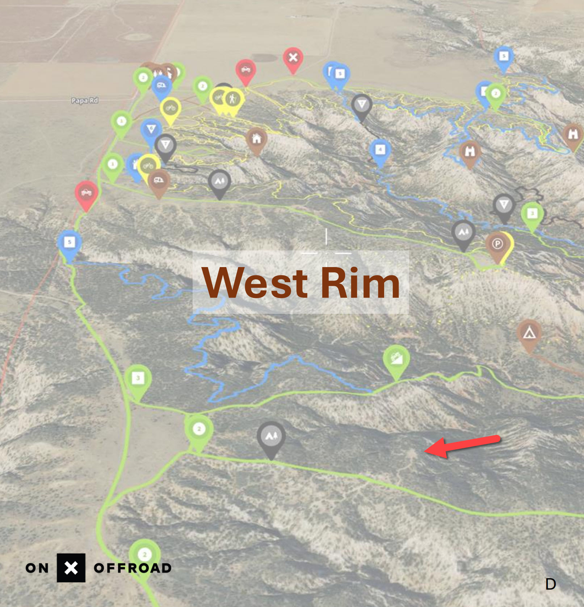
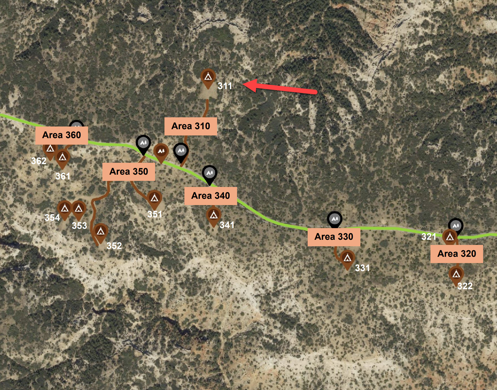
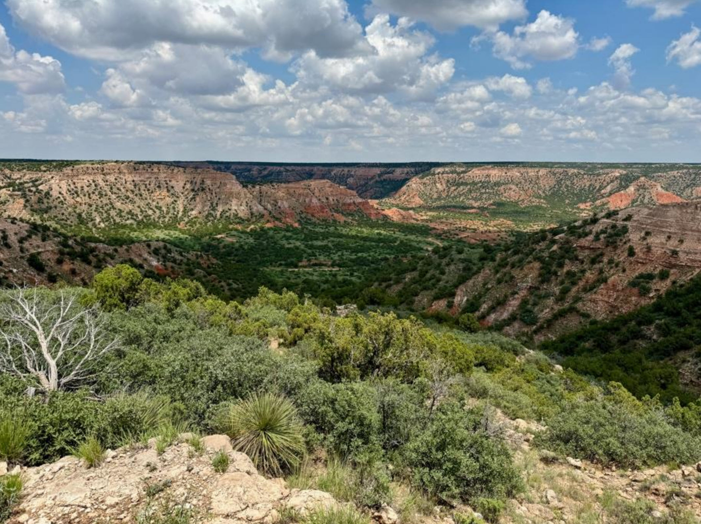

Christmas 2026 Texas Trip
MERUS Adventure Park
Campground and activity notes for the confirmed Site 311 stay near Claude, Texas.
Important Note from MERUS
“Thanks for reaching out! Since you'll be leaving first thing in the morning on the 29th, we do not require passes. If you are planning on hiking or off-roading, you will have to have passes that day. There is no electricity at 311; generators are allowed but have to be off by 10 pm for quiet hours.”
Confirmed Reservation
The invoice shows the reservation paid in full. It includes the campsite, two daily 4x4 passes, and four adult entry passes. Keep the private invoice for payment and booking details.
East Rise Area and Site 311
Access to the East Rise (Area 300) campsites requires a 4WD vehicle and a 4WD vehicle park pass. Area 300 has six camping areas, most with multiple campsites. At the end of the East Rise peninsula, McCabe's Tower houses the park's GMRS repeater and provides access to the Lone Wolf hiking trail.
Site 311 is a large campsite on the north side of East Rise, with canyon views and easy access to MERUS 101.
Campsite Location: West Rim

The red arrow marks Site 311 on the West Rim perspective view.
Aerial View: Site 311

The aerial marks campsite 311 beside East Rise Camp.
View from Site 311

Canyon scenery from the north side of East Rise at Site 311.
Power and Quiet Hours
- Site 311 has no electrical hookup.
- Generators are allowed, but must be off by 10:00 PM for quiet hours.
- Plan camper batteries, solar, water, and heating needs accordingly.
Passes and Activities
- Access to Area 300 requires a 4WD vehicle and a 4WD vehicle park pass.
- MERUS previously said a pass is not required on Dec 29 if leaving first thing and not hiking or off-roading. Confirm whether that departure exception applies to the vehicle pass required for campsite access.
- The invoice lists two daily 4x4 passes and four adult entry passes as part of this reservation. Confirm with MERUS how those purchased passes apply to the planned outing and departure schedule.